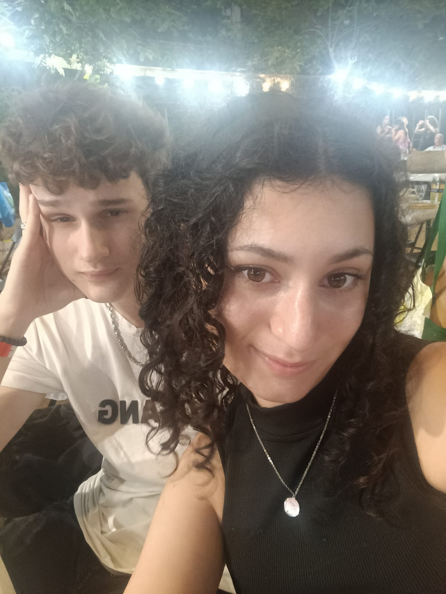
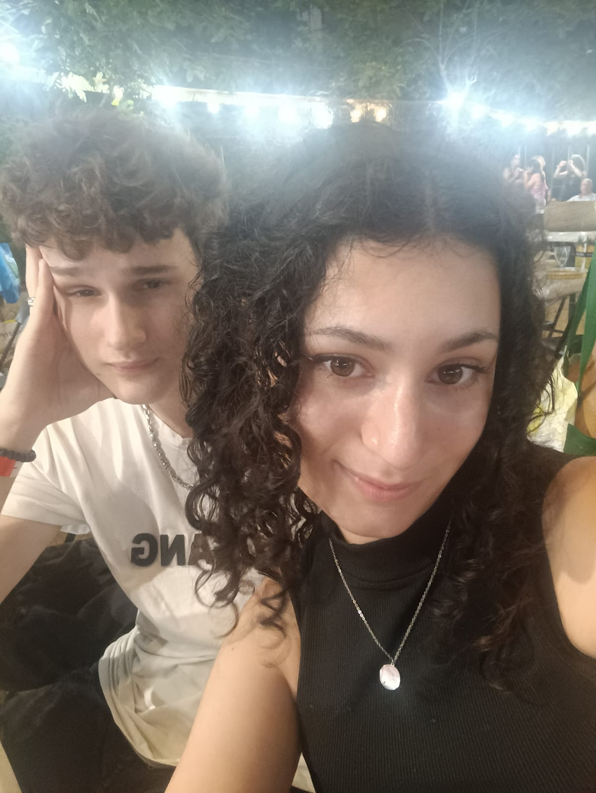

Razones por las cuales te amo
Tu sonrisa
Cuando me hablan de las 7 maravillas del mundo siempre acabo corrigiendoles y me llaman loco, pero eso es porque ninguno de ellos ha visto la pedazo preciosa sonrisa más bonita que tienes. Con tan solo verla un par de segundos ya me alegras todo el dia... MIRA JUSTAMENTE ESA SONRISA QUE ESTAS HACIENDO AHORA MISMO (o no, y habré quedado como un gilipollas). No dejes de sonreir nunca porfavor <3
 
